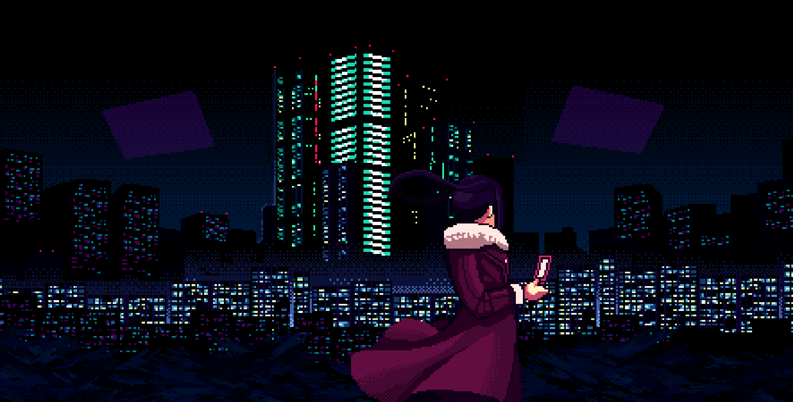
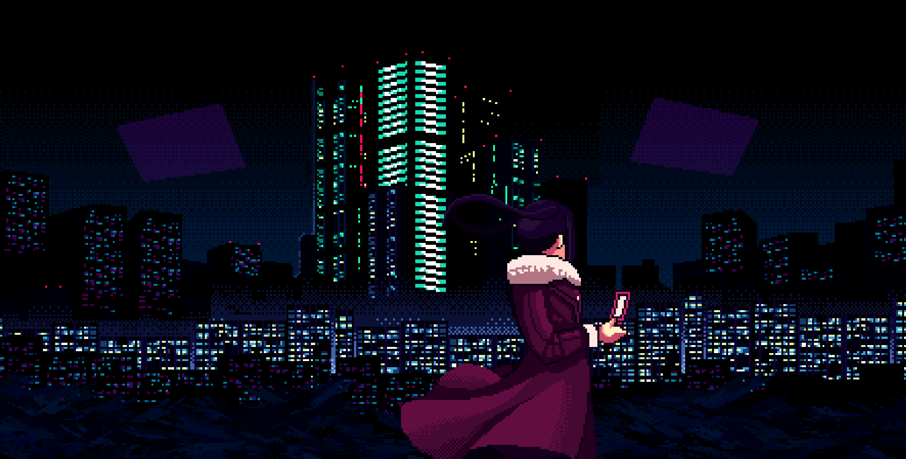

The Story
In this world, corporations reign supreme, all human life is infected with nanomachines designed to oppress them, and the terrifying White Knights ensure that everyone obeys the laws.
But, this is not about those people.
In a city that should not exist.
Where individual liberty is nothing but a daydream.
Only hope remains.
This is a story about people daring to survive.
Daring to find happiness...
In this impossible city.
You are Jill Stingray a bartender at VA-11 HALL-A, affectionately nicknamed "Valhalla."
Although it is just a small bar downtown, it attracts the most fascinating people this side of dystopia.
Keep your clients lubricated and you will be made privy to the most interesting stories.
Get to know your clients, their tastes, and prepare the drink that will change their lives.
The British Trademark Council entertains a chain of bars which VA-11 Hall-A is a part of.
Due to financial troubles and allegations of criminal activities (money laundering being one of them)
the BTC is currently in the process of closing around 40% of its bars in Glitch City, with VA-11 Hall-A being one of the bars under consideration.
Most BTC bars in Glitch City give a lot of problems to BTC, as they receive "reports of chemical damage or shady drinks."
 
